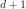

Cobyla¶
- class Cobyla(*args)¶
Constrained Optimization BY Linear Approximations solver.
- Available constructors:
Cobyla(problem)
Cobyla(problem, rhoBeg)
- Parameters
- problem
OptimizationProblem Optimization problem to solve.
- rhoBegfloat
A reasonable initial change to the variables.
- problem
See also
AbdoRackwitz,SQP,TNC,NLopt
Notes
It constructs successive linear approximations of the objective function and constraints via a simplex of  points, and optimizes these approximations in a trust region at each step. This solver use no derivative information and supports all types of constraints.
Examples
>>> import openturns as ot >>> model = ot.SymbolicFunction(['E', 'F', 'L', 'I'], ['-F*L^3/(3*E*I)']) >>> problem = ot.NearestPointProblem(model, 5.0) >>> algo = ot.Cobyla(problem) >>> algo.setMaximumEvaluationNumber(10000) >>> algo.setStartingPoint([1.0] * 4) >>> algo.run() >>> result = algo.getResult()
Methods
Accessor to the object's name.
getId()Accessor to the object's id.
Accessor to ignore failure flag.
Accessor to maximum allowed absolute error.
Accessor to maximum allowed constraint error.
Accessor to maximum allowed number of evaluations.
Accessor to maximum allowed number of iterations.
Accessor to maximum allowed relative error.
Accessor to maximum allowed residual error.
getName()Accessor to the object's name.
Accessor to optimization problem.
Accessor to optimization result.
Accessor to rhoBeg parameter.
Accessor to the object's shadowed id.
Accessor to starting point.
Accessor to the verbosity flag.
Accessor to the object's visibility state.
hasName()Test if the object is named.
Test if the object has a distinguishable name.
run()Launch the optimization.
setIgnoreFailure(ignoreFailure)Accessor to ignore failure flag.
setMaximumAbsoluteError(maximumAbsoluteError)Accessor to maximum allowed absolute error.
setMaximumConstraintError(maximumConstraintError)Accessor to maximum allowed constraint error.
Accessor to maximum allowed number of evaluations.
setMaximumIterationNumber(maximumIterationNumber)Accessor to maximum allowed number of iterations.
setMaximumRelativeError(maximumRelativeError)Accessor to maximum allowed relative error.
setMaximumResidualError(maximumResidualError)Accessor to maximum allowed residual error.
setName(name)Accessor to the object's name.
setProblem(problem)Accessor to optimization problem.
setProgressCallback(*args)Set up a progress callback.
setResult(result)Accessor to optimization result.
setRhoBeg(rhoBeg)Accessor to rhoBeg parameter.
setShadowedId(id)Accessor to the object's shadowed id.
setStartingPoint(startingPoint)Accessor to starting point.
setStopCallback(*args)Set up a stop callback.
setVerbose(verbose)Accessor to the verbosity flag.
setVisibility(visible)Accessor to the object's visibility state.
- __init__(*args)¶
- getClassName()¶
Accessor to the object’s name.
- Returns
- class_namestr
The object class name (object.__class__.__name__).
- getId()¶
Accessor to the object’s id.
- Returns
- idint
Internal unique identifier.
- getIgnoreFailure()¶
Accessor to ignore failure flag.
- Returns
- ignore_failurebool
Whether to ignore failure return codes.
- getMaximumAbsoluteError()¶
Accessor to maximum allowed absolute error.
- Returns
- maximumAbsoluteErrorfloat
Maximum allowed absolute error, where the absolute error is defined by
 where
where  and
and  are two consecutive approximations of the optimum.
are two consecutive approximations of the optimum.
- getMaximumConstraintError()¶
Accessor to maximum allowed constraint error.
- Returns
- maximumConstraintErrorfloat
Maximum allowed constraint error, where the constraint error is defined by
 where is the current approximation of the optimum and
where is the current approximation of the optimum and  is the function that gathers all the equality and inequality constraints (violated values only)
is the function that gathers all the equality and inequality constraints (violated values only)
- getMaximumEvaluationNumber()¶
Accessor to maximum allowed number of evaluations.
- Returns
- Nint
Maximum allowed number of evaluations.
- getMaximumIterationNumber()¶
Accessor to maximum allowed number of iterations.
- Returns
- Nint
Maximum allowed number of iterations.
- getMaximumRelativeError()¶
Accessor to maximum allowed relative error.
- Returns
- maximumRelativeErrorfloat
Maximum allowed relative error, where the relative error is defined by
 if
if  , else
, else  .
.
- getMaximumResidualError()¶
Accessor to maximum allowed residual error.
- Returns
- maximumResidualErrorfloat
Maximum allowed residual error, where the residual error is defined by
 if
if  , else .
, else .
- getName()¶
Accessor to the object’s name.
- Returns
- namestr
The name of the object.
- getProblem()¶
Accessor to optimization problem.
- Returns
- problem
OptimizationProblem Optimization problem.
- problem
- getResult()¶
Accessor to optimization result.
- Returns
- result
OptimizationResult Result class.
- result
- getRhoBeg()¶
Accessor to rhoBeg parameter.
- Returns
- rhoBegfloat
A reasonable initial change to the variables.
- getShadowedId()¶
Accessor to the object’s shadowed id.
- Returns
- idint
Internal unique identifier.
- getVerbose()¶
Accessor to the verbosity flag.
- Returns
- verbosebool
Verbosity flag state.
- getVisibility()¶
Accessor to the object’s visibility state.
- Returns
- visiblebool
Visibility flag.
- hasName()¶
Test if the object is named.
- Returns
- hasNamebool
True if the name is not empty.
- hasVisibleName()¶
Test if the object has a distinguishable name.
- Returns
- hasVisibleNamebool
True if the name is not empty and not the default one.
- run()¶
Launch the optimization.
- setIgnoreFailure(ignoreFailure)¶
Accessor to ignore failure flag.
- Parameters
- ignore_failurebool
Whether to ignore failure return codes.
- setMaximumAbsoluteError(maximumAbsoluteError)¶
Accessor to maximum allowed absolute error.
- Parameters
- maximumAbsoluteErrorfloat
Maximum allowed absolute error, where the absolute error is defined by
where
and are two consecutive approximations of the optimum.
- setMaximumConstraintError(maximumConstraintError)¶
Accessor to maximum allowed constraint error.
- Parameters
- maximumConstraintErrorfloat
Maximum allowed constraint error, where the constraint error is defined by
where is the current approximation of the optimum and is the function that gathers all the equality and inequality constraints (violated values only)
- setMaximumEvaluationNumber(maximumEvaluationNumber)¶
Accessor to maximum allowed number of evaluations.
- Parameters
- Nint
Maximum allowed number of evaluations.
- setMaximumIterationNumber(maximumIterationNumber)¶
Accessor to maximum allowed number of iterations.
- Parameters
- Nint
Maximum allowed number of iterations.
- setMaximumRelativeError(maximumRelativeError)¶
Accessor to maximum allowed relative error.
- Parameters
- maximumRelativeErrorfloat
Maximum allowed relative error, where the relative error is defined by
if , else .
- setMaximumResidualError(maximumResidualError)¶
Accessor to maximum allowed residual error.
- Parameters
- Maximum allowed residual error, where the residual error is defined by
-
if , else .
- setName(name)¶
Accessor to the object’s name.
- Parameters
- namestr
The name of the object.
- setProblem(problem)¶
Accessor to optimization problem.
- Parameters
- problem
OptimizationProblem Optimization problem.
- problem
- setProgressCallback(*args)¶
Set up a progress callback.
Can be used to programmatically report the progress of an optimization.
- Parameters
- callbackcallable
Takes a float as argument as percentage of progress.
Examples
>>> import sys >>> import openturns as ot >>> rosenbrock = ot.SymbolicFunction(['x1', 'x2'], ['(1-x1)^2+100*(x2-x1^2)^2']) >>> problem = ot.OptimizationProblem(rosenbrock) >>> solver = ot.OptimizationAlgorithm(problem) >>> solver.setStartingPoint([0, 0]) >>> solver.setMaximumResidualError(1.e-3) >>> solver.setMaximumEvaluationNumber(10000) >>> def report_progress(progress): ... sys.stderr.write('-- progress=' + str(progress) + '%\n') >>> solver.setProgressCallback(report_progress) >>> solver.run()
- setResult(result)¶
Accessor to optimization result.
- Parameters
- result
OptimizationResult Result class.
- result
- setRhoBeg(rhoBeg)¶
Accessor to rhoBeg parameter.
- Parameters
- rhoBegfloat
A reasonable initial change to the variables.
- setShadowedId(id)¶
Accessor to the object’s shadowed id.
- Parameters
- idint
Internal unique identifier.
- setStartingPoint(startingPoint)¶
Accessor to starting point.
- Parameters
- startingPoint
Point Starting point.
- startingPoint
- setStopCallback(*args)¶
Set up a stop callback.
Can be used to programmatically stop an optimization.
- Parameters
- callbackcallable
Returns an int deciding whether to stop or continue.
Examples
>>> import openturns as ot >>> rosenbrock = ot.SymbolicFunction(['x1', 'x2'], ['(1-x1)^2+100*(x2-x1^2)^2']) >>> problem = ot.OptimizationProblem(rosenbrock) >>> solver = ot.OptimizationAlgorithm(problem) >>> solver.setStartingPoint([0, 0]) >>> solver.setMaximumResidualError(1.e-3) >>> solver.setMaximumEvaluationNumber(10000) >>> def ask_stop(): ... return True >>> solver.setStopCallback(ask_stop) >>> solver.run()
- setVerbose(verbose)¶
Accessor to the verbosity flag.
- Parameters
- verbosebool
Verbosity flag state.
- setVisibility(visible)¶
Accessor to the object’s visibility state.
- Parameters
- visiblebool
Visibility flag.